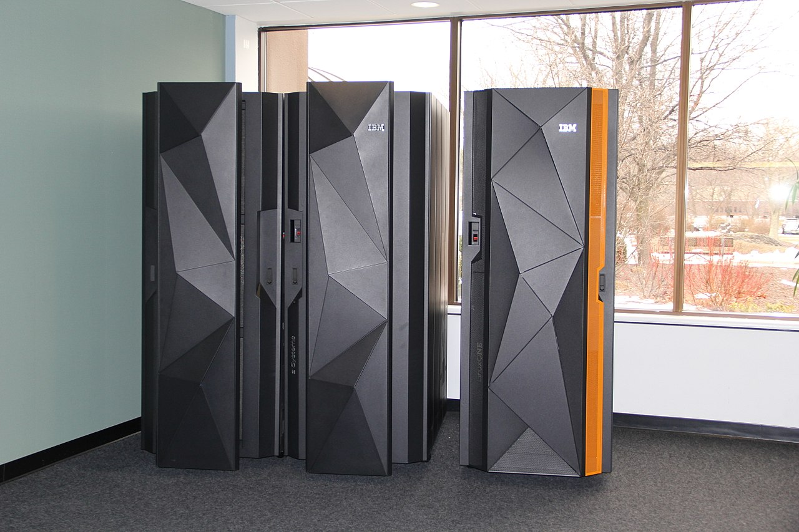

A personal computer (PC) is a multi-purpose microcomputer whose size, capabilities, and price make it feasible for individual use. Personal computers are intended to be operated directly by an end user, rather than by a computer expert or technician. Unlike large, costly minicomputers and mainframes, time-sharing by many people at the same time is not used with personal computers. Primarily in the late 1970s and 1980s, the term home computer was also used.
Institutional or corporate computer owners in the 1960s had to write their own programs to do any useful work with the machines. While personal computer users may develop their own applications, usually these systems run commercial software, free-of-charge software ("freeware"), which is most often proprietary, or free and open-source software, which is provided in "ready-to-run", or binary, form. Software for personal computers is typically developed and distributed independently from the hardware or operating system manufacturers.
Other Computers
Supercomputer
When we talk about speed, then the first name that comes to mind when thinking of computers is supercomputers. They are the biggest and fastest computers(in terms of speed of processing data). Supercomputers are designed such that they can process a huge amount of data, like processing trillions of instructions or data just in a second. This is because of the thousands of interconnected processors in supercomputers. It is basically used in scientific and engineering applications such as weather forecasting, scientific simulations, and nuclear energy research. It was first developed by Roger Cray in 1976.
Mainframe computer

Mainframe computers are designed in such a way that it can support hundreds or thousands of users at the same time. It also supports multiple programs simultaneously. So, they can execute different processes simultaneously. All these features make the mainframe computer ideal for big organizations like banking, telecom sectors, etc., which process a high volume of data in general.
Minicomputer
Minicomputer is a medium size multiprocessing computer. In this type of computer, there are two or more processors, and it supports 4 to 200 users at one time. Minicomputers are used in places like institutes or departments for different work like billing, accounting, inventory management etc. It is smaller than a mainframe computer but larger in comparison to the microcomputer.
A central processing unit, also called a central processor, main processor or just processor, is the electronic circuitry that executes instructions comprising a computer program.
The CPU performs basic arithmetic, logic, controlling, and input/output (I/O) operations specified by the instructions in the program. This contrasts with external components such as main memory and I/O circuitry, and specialized processors such as graphics processing units (GPUs).
The form, design, and implementation of CPUs have changed over time, but their fundamental operation remains almost unchanged. Principal components of a CPU include the arithmetic–logic unit (ALU) that performs arithmetic and logic operations, processor registers that supply operands to the ALU and store the results of ALU operations, and a control unit that orchestrates the fetching (from memory), decoding and execution of instructions by directing the coordinated operations of the ALU, registers and other components.
Most modern CPUs are implemented on integrated circuit (IC) microprocessors, with one or more CPUs on a single IC chip. Microprocessor chips with multiple CPUs are multi-core processors. The individual physical CPUs, processor cores, can also be multithreaded to create additional virtual or logical CPUs.
An IC that contains a CPU may also contain memory, peripheral interfaces, and other components of a computer; such integrated devices are variously called microcontrollers or systems on a chip (SoC).
Array processors or vector processors have multiple processors that operate in parallel, with no unit considered central. Virtual CPUs are an abstraction of dynamical aggregated computational resources.
Motherboard
A motherboard is the main printed circuit board (PCB) in general-purpose computers and other expandable systems. It holds and allows communication between many of the crucial electronic components of a system, such as the central processing unit (CPU) and memory
TUnlike a backplane, a motherboard usually contains significant sub-systems, such as the central processor, the chipset's input/output and memory controllers, interface connectors, and other components integrated for general use.
Motherboard means specifically a PCB with expansion capabilities. As the name suggests, this board is often referred to as the "mother" of all components attached to it, which often include peripherals, interface cards, and daughterboards: sound cards, video cards, network cards, host bus adapters, TV tuner cards, IEEE 1394 cards; and a variety of other custom components.
Similarly, the term mainboard describes a device with a single board and no additional expansions or capability, such as controlling boards in laser printers, television sets, washing machines, mobile phones, and other embedded systems with limited expansion abilities.
Random-access memory
Random-access memory (RAM) is a form of computer memory that can be read and changed in any order, typically used to store working data and machine code.
A random-access memory device allows data items to be read or written in almost the same amount of time irrespective of the physical location of data inside the memory, in contrast with other direct-access data storage media (such as hard disks, CD-RWs, DVD-RWs and the older magnetic tapes and drum memory), where the time required to read and write data items varies significantly depending on their physical locations on the recording medium, due to mechanical limitations such as media rotation speeds and arm movement.
RAM contains multiplexing and demultiplexing circuitry, to connect the data lines to the addressed storage for reading or writing the entry. Usually more than one bit of storage is accessed by the same address, and RAM devices often have multiple data lines and are said to be "8-bit" or "16-bit", etc. devices.
Graphics processing unit
A graphics processing unit (GPU) is a specialized electronic circuit designed to rapidly manipulate and alter memory to accelerate the creation of images in a frame buffer intended for output to a display device.
GPUs are used in embedded systems, mobile phones, personal computers, workstations, and game consoles.
Modern GPUs are very efficient at manipulating computer graphics and image processing. Their highly parallel structure makes them more efficient than general-purpose central processing units (CPUs) for algorithms that process large blocks of data in parallel. In a personal computer, a GPU can be present on a video card or embedded on the motherboard. In certain CPUs, they are embedded on the CPU die.
In the 1970s, the term "GPU" originally stood for graphics processor unit and described a programmable processing unit independently working from the CPU and responsible for graphics manipulation and output.
Hard Disk Drive
A hard disk drive (HDD), hard disk, hard drive, or fixed disk is an electro-mechanical data storage device that stores and retrieves digital data using magnetic storage and one or more rigid rapidly rotating platters coated with magnetic material.
The platters are paired with magnetic heads, usually arranged on a moving actuator arm, which read and write data to the platter surfaces. Data is accessed in a random-access manner, meaning that individual blocks of data can be stored and retrieved in any order. HDDs are a type of non-volatile storage, retaining stored data even when powered off. Modern HDDs are typically in the form of a small rectangular box.
Introduced by IBM in 1956, HDDs were the dominant secondary storage device for general-purpose computers beginning in the early 1960s. HDDs maintained this position into the modern era of servers and personal computers, though personal computing devices produced in large volume, like cell phones and tablets, rely on flash memory storage devices. More than 224 companies have produced HDDs historically, though after extensive industry consolidation most units are manufactured by Seagate, Toshiba, and Western Digital.
Solid-state drive
A solid-state drive (SSD) is a solid-state storage device that uses integrated circuit assemblies to store data persistently, typically using flash memory, and functioning as secondary storage in the hierarchy of computer storage.
It is also sometimes called a semiconductor storage device, a solid-state device or a solid-state disk, even though SSDs lack the physical spinning disks and movable read–write heads used in hard disk drives and floppy disks.
Compared with electromechanical drives, SSDs are typically more resistant to physical shock, run silently, and have higher IOPS and lower latency. SSDs store data in semiconductor cells. As of 2019, cells can contain between 1 and 4 bits of data. SSD storage devices vary in their properties according to the number of bits stored in each cell, with single-bit cells being generally the most reliable, durable, fast, and expensive type
Power supply unit
A power supply unit (PSU) converts mains AC to low-voltage regulated DC power for the internal components of a computer. Modern personal computers universally use switched-mode power supplies.
Some power supplies have a manual switch for selecting input voltage, while others automatically adapt to the mains voltage.
Most modern desktop personal computer power supplies conform to the ATX specification, which includes form factor and voltage tolerances. While an ATX power supply is connected to the mains supply, it always provides a 5-volt standby (5VSB) power so that the standby functions on the computer and certain peripherals are powered.
Computer cooling
Computer cooling is required to remove the waste heat produced by computer components, to keep components within permissible operating temperature limits.
Components that are susceptible to temporary malfunction or permanent failure if overheated include integrated circuits such as central processing units (CPUs), chipsets, graphics cards, and hard disk drives.
Components are often designed to generate as little heat as possible, and computers and operating systems may be designed to reduce power consumption and consequent heating according to workload, but more heat may still be produced than can be removed without attention to cooling. Use of heatsinks cooled by airflow reduces the temperature rise produced by a given amount of heat. Attention to patterns of airflow can prevent the development of hotspots.
Computer case
A computer case, also known as a computer chassis, is the enclosure that contains most of the components of a personal computer
Cases are usually constructed from steel (often SECC—steel, electrogalvanized, cold-rolled, coil), aluminium and plastic. Other materials such as glass, wood, acrylic and even Lego bricks have appeared in home-built cases.
ases can come in many different sizes (known as form factors). The size and shape of a computer case are usually determined by the form factor of the motherboard since it is the largest component of most computers. Cases are also referred to by their size (such as ATX case, Mini ITX case, etc.)
Consequently, personal computer form factors typically specify only the internal dimensions and layout of the case.